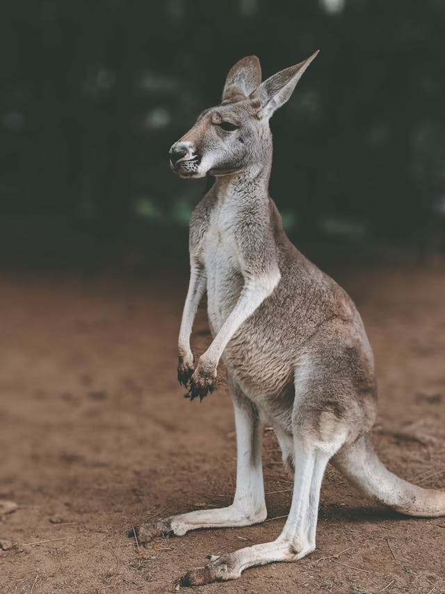
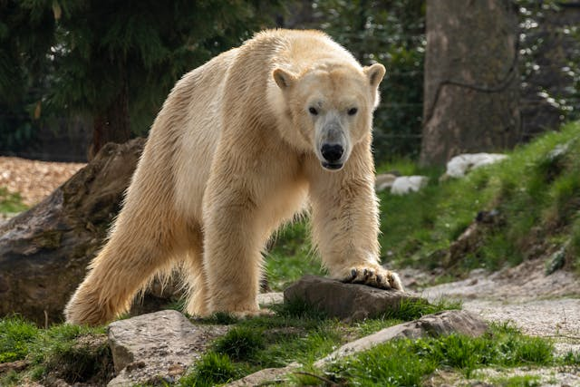
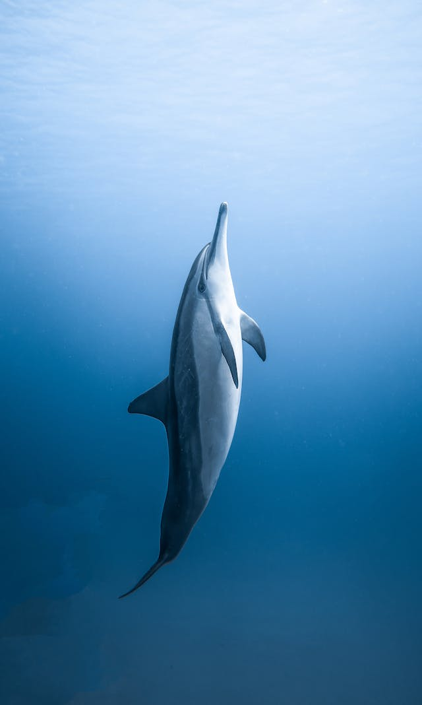

Kangaroo

- Scientific Name: Macropus
- Description: Kangaroos are large marsupials with powerful hind legs, large feet adapted for leaping, and a long muscular tail for balance.
- Habitat: Various regions of Australia, including forests, woodlands, and grasslands.
- Diet: Herbivorous, feeding on grasses and shrubs.
Polar Bear

- Scientific Name: Ursus maritimus
- Description: Polar bears are large carnivorous bears native to the Arctic, known for their white fur which provides camouflage in their snowy habitat.
- Habitat: Arctic sea ice, coastal regions, and islands.
- Diet: Carnivorous, primarily hunting seals.
Dolphin

- Scientific Name: Delphinidae
- Description: Dolphins are highly intelligent marine mammals known for their agility, playful behavior, and friendly nature towards humans.
- Habitat: Oceans and rivers worldwide.
- Diet: Carnivorous, feeding on fish and squid.